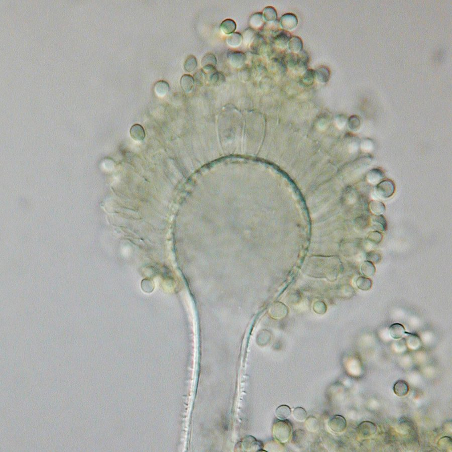

अफ्लाटॉक्सिन फफूंदAflatoxin Mold
Aspergillus flavus · Aspergillaceae · FNG-0020

- Scientific name
- Aspergillus flavus (G. Winter) Thom & Church
- Family
- Aspergillaceae
- Hindi
- अफ्लाटॉक्सिन फफूंद
- Local names
- aflatoxin fafund, peeli fafund, anaj ki fafund, aspergillus, grain mold
- Status here
- native
- IUCN
- not evaluated
- Review
- audited and independently read
When to look कब देखें
Expected mainly in July, August, September, October, November, December, January, February, March.
अफ्लाटॉक्सिन फफूंद / Aflatoxin Mold
Aspergillus flavus (G. Winter) Thom & Church — Aspergillaceae
अफ्लाटॉक्सिन फफूंद (पीली फफूंद) — दानों के भंडार का सबसे ख़तरनाक दुश्मन। नम, गर्म हवा में अनाज पर पीली-हरी फफूंद लग जाती है, जो अफ्लाटॉक्सिन नाम का ज़हर बनाती है। यह ज़हर इतना खतरनाक है कि दुनिया के सभी देशों ने इसकी सीमा तय की है। अनाज को सूखा रखो और ठंडा रखो, तो यह फफूंद नहीं आती। लेकिन बरसात में या गीले से गीले भंडार में, दिन भर नमी रहे, तो सिर्फ कुछ दिनों में अनाज ज़हरीला हो सकता है। भारत में यह फफूंद खरीफ की फसल के दौरान मूँगफली, मक्का और अन्य फसलों को संक्रमित कर सकती है, लेकिन मुख्य समस्या भंडार में है।
Quick Identification त्वरित पहचान
| Feature | Description |
|---|---|
| Appearance on grain | Green, yellow or olive-coloured powdery coating (conidiospores) on grain surface and in grain crevices |
| Smell | Musty, mouldy odour; distinctive fungal smell in contaminated grain lots |
| Texture | Fine powdery coating; rubs off easily onto fingers and cloth |
| Grain damage | Affected grains may be discoloured (yellow-brown spots or streaks); interior may be infected without visible exterior signs |
| Affected crops | Groundnuts, maize, rice, wheat; can affect many stored commodities |
| Conditions for growth | High moisture (>80% relative humidity) and warmth (25–35°C) required; grows slowly in cool, dry conditions |
Field tip: Inspect stored grain regularly during and after the monsoon. Yellow-green powdery coating on grain, especially near the surface where condensation occurs, is a warning sign. The grain will have a musty smell. Store grain in sealed, dry containers with moisture below 12%. Any suspect grain should be dried further or discarded, not used for food or animal feed.
हिंदी — कैसे पहचानें: भंडार के अनाज पर पीली-हरी, ढीली फफूंद। सड़ी, नमी की बदबू। उँगली से पोंछो तो पाउडर निकल जाए। गीली, गर्म जगह में।
Morphology and Contamination आकृति और संदूषण
Fungal structure (visible with microscope and in culture):
| Structure | Appearance |
|---|---|
| Conidiophore | Unbranched or weakly branched; supports conidial heads |
| Conidial head (vesicle) | Spherical, bearing rows of sterigmata (spore-bearing cells) |
| Conidium (spore) | Spherical, yellow-green to olive-green, 3–5 µm; easily airborne |
| Sclerotia | Resting bodies; brown, hard, 0.5–2 mm; can survive unfavourable conditions and contaminate future grain lots |
| Colour in culture | Yellow-green to olive-green, producing yellow pigment and secondary metabolites |
Aflatoxin production:
Aspergillus flavus produces aflatoxins (a group of carcinogenic secondary metabolites) as by-products of its metabolism. The most dangerous forms are aflatoxin B1 and B2. Aflatoxin production depends on:
- Temperature: optimal 25–30°C
- Moisture: grows fastest at >80% relative humidity
- Duration: detectable levels of aflatoxin appear within 5–10 days of fungal colonization under optimal conditions
- Grain type: groundnuts > maize > rice ≈ wheat (groundnuts are most susceptible)
Contamination risk: Aflatoxin can accumulate to dangerous levels in stored grain without visible signs of fungal growth. Even low-level visible contamination indicates potential aflatoxin presence.
Life Cycle and Storage Conditions जीवन चक्र और भंडार
Pre-harvest (in field):
- Inoculum present in soil and air at all times; low-level colonization may occur on maturing crops, especially if harvest is delayed or if there is pre-harvest rainfall
- Risk increases in warm, humid conditions just before harvest
Post-harvest (in storage) — THE CRITICAL PERIOD:
| Condition | Outcome |
|---|---|
| Moisture <12%, cool (<20°C) | Fungus dormant or absent; grain safe for storage; sclerotia and spores may remain viable but do not germinate |
| Moisture 12–15%, cool (20°C) | Slow growth; risk increases over months |
| Moisture >15%, warm (25–30°C) | Rapid growth; aflatoxin production within 5–10 days |
| Moisture >80%, warm (25–35°C), high humidity | Catastrophic growth; grain can become unsafe in 3–5 days |
| Condensation on grain surface | Water droplets provide ideal conditions; mold colonizes even if bulk grain is "dry" |
Survival mechanisms:
- Aspergillus flavus survives as dormant spores in soil, on seeds, and as sclerotia (hard resting bodies) in grain lots
- Sclerotia are resistant to drying and heat and can survive for years, re-infecting new grain lots if conditions become favorable
Inoculum sources:
- Infected seed (especially groundnuts) brought into storage
- Grain exposed to high humidity before or during storage
- Contaminated storage containers with residue from previous lots
- Soil dust containing spores
Food Safety Hazards खाद्य सुरक्षा खतरे
Aflatoxins:
- Chemical structure: Furanocoumarin derivatives; highly stable and resist cooking and processing
- Biological effects: Aflatoxin B1 is a potent carcinogen and mutagen; affects the liver (causing hepatotoxicity and increasing risk of hepatocellular carcinoma); suppresses immune function; causes growth retardation in children
- No safe level: No minimum "safe" dose is recognized; any detectable level is considered a contamination
- International limits: The Codex Alimentarius (UN/WHO) sets limits: aflatoxin B1 ≤5 µg/kg for food; total aflatoxins ≤10 µg/kg for food (EU and many countries have 2–4 µg/kg limits; India follows Codex)
- Health impacts in India: Foodborne aflatoxin exposure is a public health concern in regions where grain storage conditions are poor; cases of aflatoxicosis (acute poisoning) have been documented, particularly in children
Vulnerable populations:
- Children and infants (immature immune systems; malnutrition increases susceptibility)
- Immunocompromised individuals
- Those consuming large quantities of groundnuts or maize (staple crops in affected regions)
Prevention and Control रोकथाम और नियंत्रण
1. Pre-harvest Management:
- Monitor crop maturity; harvest at physiological maturity (do not over-ripen or delay harvest)
- Avoid mechanical damage during harvest (broken seeds are more susceptible)
- Manage insect and mite damage (cracks and feeding holes provide entry for fungi)
2. Drying — MOST CRITICAL STEP:
- Target moisture: Reduce grain moisture to ≤12% as quickly as possible after harvest
- Method: Sun-drying on clean, raised surfaces; mechanical dryers in wet seasons or humid climates
- Duration: In monsoon conditions, grain may take 5–7 days to reach 12% moisture; drying should be accelerated
- Monitoring: Use a moisture meter (available from agricultural supply shops); do not rely on visual assessment
3. Storage Conditions:
- Moisture control: Use sealed, moisture-proof containers (drums, bags with liners); store in a dry room
- Temperature: Keep storage cool (<20°C if possible); avoid storage in direct sunlight or near heat sources
- Humidity: Maintain relative humidity <70% in storage room; use desiccants (silica gel) in sealed containers if humidity is high
- Ventilation: Avoid condensation; ensure air circulation to prevent moisture pockets
- Isolation: Store suspect grain separately; do not mix with clean stock
4. Container and Storage Site Cleanliness:
- Clean all storage containers thoroughly before use; remove all grain residue from previous lots
- Inspect for prior contamination (look for mold growth or discolouration)
- Store grain away from soil; use raised platforms or elevated storage to avoid ground moisture
5. Monitoring During Storage:
- Inspect grain monthly during storage, particularly during monsoon and post-monsoon periods
- Look for colour changes, musty odours or visible mold growth
- Remove any contaminated grain immediately
6. If Aflatoxin Is Suspected:
- Do NOT use contaminated grain for human food or animal feed (aflatoxin is not destroyed by cooking)
- Aflatoxin-contaminated grain should be properly disposed of (buried or incinerated); burning may release toxins into air
- Report severe contamination to local agricultural extension office or food safety authority
- Consider testing grain (aflatoxin testing services are available through some state agricultural laboratories)
Expected Locally स्थानीय रूप से अपेक्षित
Not a field record. Written from food-safety literature for eastern Uttar Pradesh. No field observations required; this is a storage hazard profile.
भंडार सुरक्षा दस्तावेज़। स्थानीय अवलोकन की आवश्यकता नहीं।
Aspergillus flavus is expected to pose a storage risk in Basti and Ayodhya districts when:
- Grain moisture is high (>15%) during monsoon and post-monsoon months (July–November)
- Storage facilities lack moisture control and ventilation
- Groundnuts are stored after harvest (September–October) in humid conditions
- Maize or other susceptible crops are stored without adequate drying
- Storage containers or rooms are not sealed or have prior contamination
Risk is highest in:
- Household grain storage lacking moisture control
- Community grain stores with poor ventilation
- Groundnut storage facilities after monsoon harvest
- Grain stored near soil or in damp locations
The risk can be nearly eliminated through proper drying (to <12% moisture), sealed storage, and humidity control.
Distribution वितरण
Global range: Aspergillus flavus is found in soil and air globally, particularly in tropical and subtropical regions.
In India: Ubiquitous in soil and air; aflatoxin contamination is a documented food-safety concern in groundnut-growing regions (Gujarat, Tamil Nadu, Karnataka), maize-growing regions, and areas with high post-harvest moisture exposure.
In Uttar Pradesh: Present in soil and air throughout. Aflatoxin contamination risk is highest in eastern districts (Basti, Gorakhpur, Kushinagar) with high monsoon rainfall and in groundnut and maize cultivation areas.
In Basti district / eastern UP: Expected to be present in air and soil; contamination risk is significant for stored grain, especially groundnuts and maize, during and after monsoon season due to high humidity.
Research Questions शोध प्रश्न
- How many farmers in your village store grain in sealed containers versus open piles, and what moisture levels do they maintain? / आपके गाँव में अनाज भंडार कैसे रखते हैं — बंद डिब्बों में या खुले में, और नमी कितनी रहती है? — Survey 10 farmers; record storage method and perceived moisture.
- During monsoon grain storage, how often does stored grain develop a musty smell, and when does it appear? — Monitor stored grain weekly; record date and smell.
- Can farmers access moisture meters or understand what 12% moisture means in practice? — Ask local extension office and grain dealers about availability of simple moisture-testing methods.
- If you dry grain to <12% moisture in a sealed container and compare it with traditionally stored grain, how long do both remain free of visible mold? — A simple 3-month comparison during monsoon.
- Are there aflatoxin testing facilities available at the state level, and what is the cost for a farmer to test a grain lot? — Contact state agricultural laboratory and food-safety authority.
Similar Species मिलती-जुलती प्रजातियाँ
| Species | How to tell apart | हिंदी |
|---|---|---|
| Aspergillus niger (black mold) | Black, not yellow-green, powdery colonies on onions, garlic and damp walls; not an aflatoxin producer | काली फफूंद — काली, पीली-हरी नहीं |
| Penicillium spp. (blue-green molds) | Blue-green, velvety, on bread and citrus; smaller, denser colonies; different toxins | नीली-हरी फफूंद — रोटी और नींबू पर |
| Black Bread Mold (Rhizopus stolonifer) | Grey-black cottony threads with black heads, fast-spreading on bread; not an aflatoxin producer | रोटी की फफूंद — धागे जैसी, तेज़ी से फैलती |
| Aspergillus parasiticus | Darker green; also makes aflatoxins; cannot be told apart without a laboratory | प्रयोगशाला के बिना अलग नहीं |
Field rule: A yellow-green powdery mould on stored grain, groundnut or maize is treated as A. flavus and the grain as unsafe; the colour of the mould does not tell you how much toxin is present, so the rule is the grain, not the mould.
Taxonomy & Classification वर्गीकरण
Original description. Aspergillus flavus was first described by G. Winter in 1887 as Sterigmatocystis flavus. It was reclassified to the genus Aspergillus by Thom & Church in 1926 based on its morphological similarity to A. fumigatus.
Subspecies. No subspecies are formally recognized. However, isolates of A. flavus vary in their ability to produce aflatoxins; some are non-toxigenic or produce only low levels of aflatoxin B2. Standard food-safety protocols assume all A. flavus are potentially toxigenic.
Family and order placement. Order Eurotiales, family Aspergillaceae. Aspergillus is the largest genus of filamentous fungi; it contains over 300 species, many of which are common in soil and air (saprophytes) and some of which are important in fermentation (brewing, baking, cheese-making) and biotechnology.
Phylogenetic notes. Aspergillus flavus is closely related to A. parasiticus (which also produces aflatoxins) and A. oryzae (used in fermentation). The aflatoxin synthesis genes are shared among several Aspergillus species, suggesting horizontal gene transfer in the distant past.
IUCN status rationale. Not evaluated. As a ubiquitous fungus maintained by environmental spores and soil populations, its conservation status is not applicable. Its management is a food-safety priority.
Photo Gallery फोटो गैलरी
Photos needed आवश्यक फोटो
- [ ] Yellow-green mold on stored grain (अनाज पर फफूंद)
- [ ] Close-up of conidial heads under magnification, if possible (माइक्रोस्कोप में)
- [ ] Properly dried grain in sealed storage versus contaminated grain (भंडार की तुलना)
No photos yet — add field photos to media/species/aflatoxin_mold/ and run node scripts/sync_photos.js.
References संदर्भ
- Winter, G. (1887). Die Pilze Deutschlands. Kryptogamen-Flora (cited as Sterigmatocystis flavus)
- International Agency for Research on Cancer (IARC) (1993). Aflatoxins. IARC Monographs on the Evaluation of Carcinogenic Risk to Humans, vol. 56. WHO, Geneva.
- Codex Alimentarius Commission (2020). Code of Practice for the Prevention and Reduction of Aflatoxin Contamination in Crops. FAO/WHO, Rome.
- Ministry of Food Processing Industries, Government of India (2012). Guidelines for Prevention of Aflatoxin Contamination in Groundnuts. [India-specific guidance]
- Pitt, J.I. & Hocking, A.D. (2009). Fungi and Food Spoilage (3rd ed.). Springer, New York. [comprehensive reference on food-spoilage fungi]
- GBIF Occurrence Data — Aspergillus flavus, India (2026).
Source file: species/fungi/molds/aflatoxin_mold.md